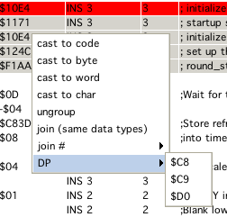

dissi window
dissi window
Dissi only shows sensible data that was LOADED from a file, dissi does NOT read data from the emulator, all addresses not loaded are marked as "unkown" and contain for the purpose of dissi only a "0" (null). That means it is not possible to look at RAM or IO locations and per default these are hidden from view!
If no help is given (in form of information, see below) dissi tries to disassemble the given file as follows:
it assumes the file is a valid vectrex file, meaning it searches the start of the file for a vectrex header:
copyright string
music
text display list (with size and position information)
0 (zero)
assumes code therafter
"assuming code therafter" in general is kind of difficult, because if data is encountered dissy tries to interprete data as code and that looks most of the time pretty silly - so please help dissi!
dissi allways tries to disassemble the file so that assi can compile the generated source code to be 100% the same binary as was given in the first place
for that at all to be possible (see bulletpoint 2) dissi even without help must generate data, because there are data bytes that have no representation as an assembler mnemonic, or a postbyte is illegal for a correct mnemonic
dissi generates DB data values for those occasions and provides a line comment for its reasoning
in general dissi would be grateful, if you discover "bunches" of such generated DB-Data, that you provide help and mark these ranges as DATA (which is just a drag, a click and another click to save them for next time)
For dissi and its "children" you can often find the following icon in the uper left corner:
 always update
always update
which means the contents of this window will be updated "always". This mainly refers to when not in debug mode. The term "always" is a bit misleading. Always here means after each "emulator call". This does not mean "after each emulated instruction". The later is only true, when in single step or continuous mode. When the emulator is in "play" mode, each emulator call approximately emulates 30000 cycles worth of instructions.
Following buttons are available for dissi:
 debug
debug
start debuging (program halts for now), also opens a "regi" window
 single step
single step
perform one single step, all output/status windows are updated
 overstep
overstep
the next "one time" breakpoint is set after the address of the next instruction. This means, the next instruction is emulated, and e.g. if that one is a JSR to some other place, that whole subroutine is executed and the program will be halted after returning.
 step out
step out
if the program is performing a subroutine, the next "one time" breakpoint is set to the top most callstack address
 breakpoint
breakpoint
a breakpoint is set at the current selected address in "dissi".
Breakpoints are ALWAYS active, even when not in debug mode!
 continuous single step
continuous single step
single step until breakpoint is hit, or the user interferes
 undo
undo
undo the last emulated instruction. Currently the undo-buffer is set to "2000", after that no undo is possible. This will be configurable at a later point.
 redo
redo
the next "state" in the ringbuffer of undoable state is set. If I did everything correct, this should be exactly the same as performing a single step. Performing a "real" single step "resets" the redo "pointer".
 tracki
tracki
opens a tracki window
 viai
viai
open a monitor window for the 6522
 dumpi
dumpi
opens a memory dump window
 vari
vari
opens a variable listing window
 labi
labi
opens a label listing window
 ayi
ayi
opens an ayi window
 breaki
breaki
opens a breaki window
 vinfi
vinfi
this will enable a mouse pointer in the emulation window. You can select any displayed vector and get information about it. Upon selecting a vector a "vinfi" window opens.
 write file
write file
This writes a source file of the current dissi contents to your hard drive. The file generated will save to the location the current bin file was loaded from and has a file extenstion of *.dasm.asm".
Shift click will save a "clean" assembler file. Clean, as in no variables, defines, equ or whatever. Just plain assembler with lots of numbers!
If the current cartridge has more than one bank, a file is generated for EACH bank.
 write cnt file
write cnt file
This writes the current collected or individually gained information of dissi to a cnt file (or more than one if banks are used). This is the only way to persist your comments and insights. Use it!
 save vector screenshot
save vector screenshot
Saves the current vectrex display as a Vectorlist to use in veccy.
 history back
history back
Within dissi you can easily "jump" from one address to the next, dissi keeps a history of these "jumps", with these buttons you can navigate your history
 history forward
history forward
...
The main part of "dissi" is occupied by a "memory" table. Each line represents one memory location of your vectrex. Per default unkown locations are hidden. Addresses which are "part of other" addresses are also per default hidden (both can be viewed toggling the two checkboxes in the upper right area).
The columns of the table are more or less self explainatory, here some more information:
Column 1 - Address
This is the memory location where this line starts. Machine code instructions can occupy more than one memory location, as do "groups" of bytes, words or chars. Per default one group of such data is displayed per line. The next address will be the one after the grouped memory locations.
SHIFT-mouse click opens dumpi at address.
Column 2 - Label
This column contains all known labels for that address (group). If there is more than one label, they are seperated by a ":". Single click on a label cell, will hightlight the first label in the operand entry of the table.
Labels can be edited! When you enter the editor, you see all labels for exactly the address of that line seperated by a ":" (in opposition to when you are not editing, than you can see all labels belonging to the corresponding instruction group of that address).
You can enter new labels, delete old ones as you like.
The disassembly after finishing editing the labels will change accordingly.
If you "delete" any of the old labels, the reference in the source will be replaced with the first label in the list.
Changing the order does not change references.
Adding a new first label does not change references.
deleting the last label will either replace the reference with the actuall address (or offset), or generate a new label on the fly (depending on dissi configuration settings)
there is no "syntax checking" on edited labels, if they contain spaces or otherwise "bad" characters, than "bad luck" if you want to assemble exported sources
Column 3 - Content
This is a hex-byte representation of this memory location (group)
Column 4 - Mnemonic
A Mnemonic representation of the underlying manchine language instruction - or a pseudo opcode for data (DB, DW).
Column 5 - Operand
Underlying operand of the machine language instruction or a representation of data.
Column 6 - Page
one of four possible states:
0 - page 0 opcode
1 - page 1 opcode
2 - page 2 opcode
-1 - data
Column 7 - Cycles
The number of cycles an instruction takes (or ??? for data)
Column 8 - Mode
If the instruction has an "address mode", than it is listed here (empty otherwise). Possible states are:
- immediate
- direct
- extended
- indexed
- relative
- inherent
Column 9 - →Address
If column 9 was one of (direct, extended, relative) the resulting "target"-address is listed here. If the resulting address is a 16bit address, the tooltip will show the contents of that location. A double click on the address will move dissi to that location (8 bit addresses are interpreted as relative jumps, 16 bit addresses as absolut jumps). In many cases this convention makes sense - not in all. A SHIFT double click opens dumpi at that address location.
Column 10 - Type
The type of the memory location. Can be one of:
- DB Char
- DB Byte
- DB Ptr
- DB Word
- INS 1
- INS 2
- INS 3
- INS 4
- INS 5
- INSPart 2
- INSPart 3
- INSPart 4
- INSPart 5
Column 11 - Length
Length of the instruction in bytes - or the length of the grouped data in bytes.
Column 12 - Comments
All comments belonging to the address. Seperate lines are seperated by ":". All comments are displayed by the tooltip! Comments can be edited - as labels only for exactly the address of the current row.
Column 13 - DP
Guessed or set direct page register dissi thinks appropriate for that address. This is not allways correct

popup window
Selecting rows in dissi enables you to change the "display" of the data on the fly. Right clicking opens a popup. Selecting the menuitems applies the selected entry to the currently selected rows (and their represented addresses). Following options are provided:
cast to code
casts the selected rows to be "enforced" to code
cast to byte
casts the selected rows to be "enforced" to byte data
cast to word
casts the selected rows to be "enforced" to word data
cast to char
casts the selected rows to be "enforced" to char data
ungroup
ungroup selected rows (if possible, code e.g. can't be ungrouped or joined)
join
groups selected rows, ALL selected (if possible, data which are not ascii e.g. can't be char-joined)
join #
group to selected number (2-6)
DP
set direct page register (what dissi is led to believe the dp is) to one of $c8, $c9, $d0
There are not many yet - dissi is still in development:
"SPACE", sets or unsets a breakpoint at the current row.
"R", run (disables debugging, till a breakpoint is hit)
(This is not finished yet) Below the main table is a split panel, which again consists of two entities.
a "message" board, which at some stage might give you some feedback of what you are doing
a commandline where you can enter dissi commands without getting dizzy from all the mouse movements (although, this is a part which is not complete yet).

dissi commands
h shows a help of the current available commands, ...
these will be expanded as I need them, as of now following "written" commands are available:
reset
go
cycles (set or read)
count cycles (between two addresses)
print (memory location)
breakpoint address, upon bankswitch, or any bit of VIA ORB
label reset (all automatically build lables)
clear ALL breakpoints
information about current cartridge
switch debugger to bank #
remove all automatically build "error" comments
toggle display about when a bankswitch occurred
cls
poke $xxxx $yy [change any memory location]
(as you see, these were commands that I at some stage needed while hacking VIDE together :-))
On the bottom of dissi is a search field. Searches covers all kinds of labels and commentary
Entering any text will hightlight the operand cells, that contain a match.
In order to satisfy old debugging habbits (of doing a "System.out.println(...)" or a Console.writeln("...") or whatever) - I implemented a "hey dissi" routine.
In short, you can tell your source code to output information to the dissi message board. Everything works in form of comments. How comments are entered - see below (CNT, LST or ASSI, which of these is of no importance, as long as dissy knows the comments, when a vectrex program is executed).
As of now there are only two commands implemented, but if needs arise I can improvise and supply more :-).
The comment syntax is quite easy, dissi parses all comments and if it finds the keywords:
hey dissi
It knows that you are talking to it. Dissi than takes the string it finds after "hey dissi" which is expected to be in parentheses and tries to interprete it as commands.
Dissi as of now only knows two commands:
print
print some information
break
insert a breakpoint here
Example 1:
; hey dissi "print I am great"
Will output
"I am great"
Whenever this line is passed in emulation. The emulation is not stopped, only the string is printed.
Example 2:
; hey dissi "print value of $c9b5"
Will output
"value of $c9b5 = $89"
(in case the memory location of $c95b equals $89 at the time)
Example 3:
; hey dissi "print value of $loop"
Will output
"value of loop = $01"
(in case the memory location of the label "loop" equals $01 at the time)
In short:
you can output any text after a print provided in parantheses
you can give the print command a 16bit hex-number which must start with a "$", it than will print that address and the 8bit value stored in that address
you can print any known "variable" and its 8bit contents, the label must be proceded by a "$"
technically the string in the parantheses is "split(" ")" and all resulting words are interpreted with the above syntax, so in one line you can print as much as you like
Example 4:
; hey dissi "break"
Will simply add a breakpoint to that line. Program execution will be halted.
There are three (plus one) ways to supply dissy with information.
if you happen to use as09 from: Copyright 1990-..., Frank A. Vorstenbosch, Kingswood Software.
You can use the "LST" files that this assembler generates. If the "LST" file is in the same directory as the rom file, it will be loaded automatically.
Compile your source file with assi in VIDE.
edit dissi (not implemented yet, and this is actually the "plus one")
Supply a "CNT" file, if the "CNT" file is in the same directory as the rom, it will be loaded automatically.
A CNT file is a description file for a rom. There are a handfull of entries you can provide. If done with enough endurance and research you can supply a wealth of information. Following entries are possible:
START BANK x / END BANK x
All entries between those tags are only relevant for the given bank. The same CNT file can be used for different banks, but all information not belonging to the corresponding bank are ignored.
If no start or end is given, all information are considered to be relevant for bank 0.
After an END BANK x the default switches back to bank 0.
(Not parsable numbers/characters are treated also as bank 0)
END BANK x
EQU
Defines a "constant".
Example:
EQU VECTOR_LENGTH 0x10
EQU LENGTH_TIME $A0
EQU LENGTH_POS_X 20
LABEL
Defines a "label".
Example:
LABEL $F192 Wait_Recal
DIRECT_LABEL
Defines a "label" for DP addressing, with this option you can assign different names to same values and have dissi enabled to discern the two.
Example:
DIRECT_LABEL $D0 $00 ORB
DIRECT_LABEL $D0 $01 ORA
DIRECT_LABEL $C9 $00 Ship_counter
COMMENT_LINE
Adds a complete line of commentary befor the given address.
Example:
COMMENT_LINE $0020 From here on, the wonderfull vectrex program will do ...
COMMENT
Adds a comment to the end of the instruction (group) beginning at the address.
Example:
COMMENT $0022 Plus 1 here because the ship exploded yesterday ...
COMMENT_LABEL
Adds a comment to a label (this is mainly interesting for labels in RAM).
Example:
COMMENT_LABEL $C89F Amount of shrimps the player has eaten ...
RANGES
The range keyword has several subdivisions, which all work alike.
First the examples, than a quick explaination.
Example:
RANGE $17 - $28 CHAR_DATA
RANGE $1917 - $1943 DB_DATA
RANGE $1913 - $1917 DW_DATA
RANGE $2913 - $2917 DWP_DATA
RANGE $1943 - $3499 CODE
RANGE $1B2D - $5255 DP $D0
Essentially tell dissi what kind of data/code it has to expect. The example shows all six different type of ranges currently implemented.
CHAR_DATA
Are Vectrex "ASCII" chars, usually terminated by a $80.
DB_DATA
Byte data.
DW_DATA
Word data.
DWP_DATA
Word pointer data.
CODE
Code, here dissi should be put to work!
DP
Tell dissi to expect DP to be set to the following value.
The first four of those ranges can have an additional value added. A number describing the maximal group length. If supplied, dissi tries to group the data found in the range into groups with that length.
Example:
RANGE $1917 - $1943 DB_DATA 5
Will group data into "packages" of five:
DB $10, $ff, $03, $06, $0c
DB $10, $ff, $18, $0c, $08
DB $10, $ff, $01, $02, $02
edit and save data to local "derby" database
(done!) make assi and dissi completely compatible
In order to test the assembler, I wrote a special version of dissi, → cdissi (compare dissi).

compare dissi
CDissi only makes sense if you have two nearly identical binary images.
You can load both of them and have them displayed side by side.
Both lists are in sync, and can not be unsynced.
"Rows" in dissi are compared address wise. All that are equal have white background, all that are different are red.
Below the table you can enter a start and an end address for a CRC generation for both loaded files.
Note:
Format (byte, word, char, code) of the output is respected, so the same data as word and byte shows as a difference.
On both tables you do have the popup-menu to cast the data to anything you like.